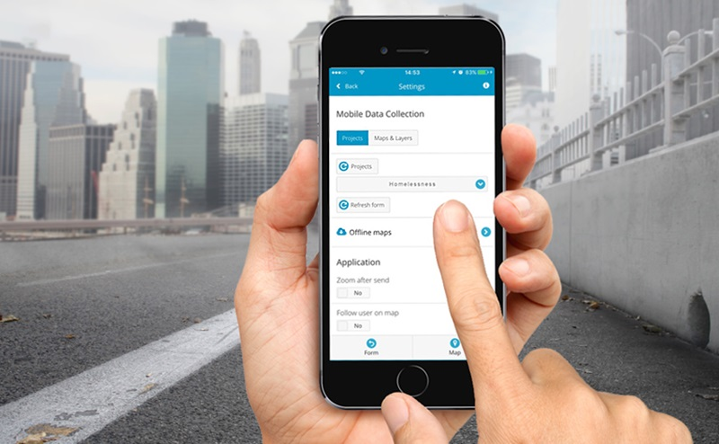

<ion-header>
  <ion-toolbar color="primary">
    <ion-buttons slot="start">
      <ion-back-button></ion-back-button>
    </ion-buttons>
    <ion-title>Field Collection</ion-title>
  </ion-toolbar>

  <ion-toolbar color="secondary">
    <ion-title>Incidents</ion-title>
  </ion-toolbar>
</ion-header>

<ion-content [fullscreen]="true">
  <ion-header collapse="condense">
    <ion-toolbar>
      <ion-title size="large">Incidents</ion-title>
    </ion-toolbar>
  </ion-header>
  
    <ion-card class="ion-text-center" *ngIf="incidents.length === 0">
      
  </ion-card>
  <ion-card color="secondary">
    <ion-card-header >
      <ion-card-subtitle>Collect incident</ion-card-subtitle>
      <ion-card-title>Incidents</ion-card-title>
    </ion-card-header>
  
    <ion-card-content>
      This app will help to collect a data and share of any incident. 
      To add a new incident click the + below.
    </ion-card-content>
  </ion-card>
   
  <ion-list >
    <ion-item-sliding *ngFor="let incident of incidents; let i = index">
      <ion-item>
        <h2>{{incident.title}}</h2>
        <p>{{incident.rate}}</p>

      </ion-item>

      <ion-item-options >
        <button (click)="editIncident(incident,incident._id, i)"  icon-start>
          <ion-icon name="create"></ion-icon>
          Edit
        </button>
        <button (click)="shareIncident(incident, i)" ion-button color="light" icon-start>
          <ion-icon name="share" color="light"></ion-icon>
          Share
        </button>
        <button (click)="removeIncident(incident._id, i)" ion-button color="danger" icon-start>
          <ion-icon name="trash"></ion-icon>
          Done
        </button>
      </ion-item-options>
    </ion-item-sliding>
  </ion-list>

  <ion-fab bottom right color="secondary">
    
    <ion-fab-button (click)="addIncident()" ion-fab mini>
      <ion-icon name="add" ></ion-icon>
    </ion-fab-button>
    
  </ion-fab>
</ion-content>